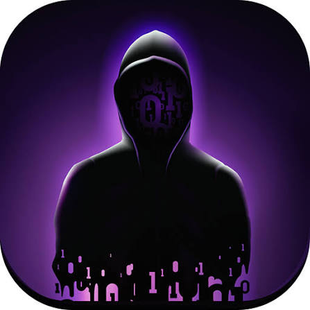
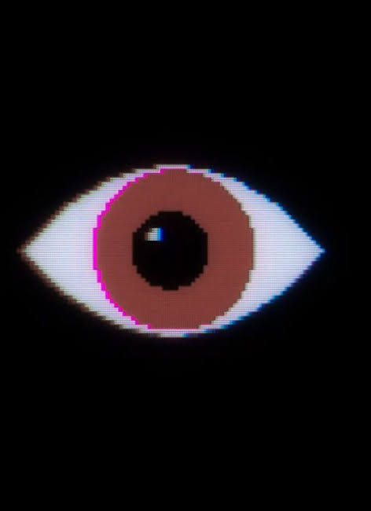
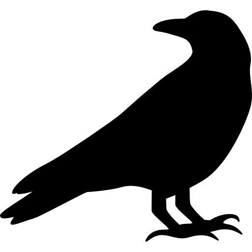

Duskwood se inicia 72 horas após o desaparecimento de Hannah Donfort, quando os amigos dela recebem uma mensagem no celular da própria Hannah contendo apenas o seu número de telefone.
Você entra no chat do grupo para ajudar na investigação, conversando com os personagens em tempo real, analisando pistas e mídias para desvendar o mistério.
Fonte:

Quais são os personagens?
Duskwood Oficial
Hannah Donfort: A jovem que desaparece em Duskwood e cujo número de telefone acaba indo parar no celular do jogador
Thomas: Namorado de Hannah, muito desesperado e impulsivo para encontrá-la.
Lilly Donfort: Irmã de Hannah. No início desconfia muito do jogador, mas depois se torna importante na investigação.
Jake: Um hacker inteligente e misterioso que ajuda você em segredo e descobre-se ter laços familiares com Hannah.
Jessy Hawkins: Amiga de Hannah que trabalha na oficina mecânica. É muito amigável e carismática com o jogador.
Richy Roger: Amigo de infância de Hannah e gerente da oficina mecânica local.
Cleo: Amiga leal de Hannah que tenta investigar por conta própria correndo riscos na floresta.
Dan Anderson: Amigo do grupo com um humor mais cínico. Fica fora de ação boa parte do tempo devido a um acidente de carro.
Amy Bell Lewis: Outra jovem cuja ligação com o passado e com Hannah movimenta os segredos sombrios da vila.
Fonte:
Oque tem no jogo?
Duskwood Oficial
Análise de Perfis: Entre nos perfis fictícios dos personagens para olhar fotos, postagens e status em busca de pistas escondidas ou contradições.
Conversas no Chat: Você conversa com os personagens por texto, áudio e chamadas de vídeo. Suas escolhas de diálogo alteram a reação deles e a confiança em você.
Trabalho com o Hacker: O personagem Jake envia arquivos corrompidos, fotos criptografadas e links de bancos de dados para você analisar.
Minijogos de Hackear: Para avançar na história e liberar memórias ou mensagens apagadas do celular de Hannah, você precisa completar minijogos de "combinar 3" (estilo Candy Crush).
Espionagem: Em momentos específicos, você ganha acesso para ler chats privados entre outros personagens sem que eles saibam.
Fonte:

Nymos
Nymos é o apelido fictício de um programa de criptografia ou chat seguro criado por Jake, o hacker de Duskwood.
A Função: Jake usa essa ferramenta para se comunicar com você e com a Lilly de forma totalmente segura, protegendo a conversa contra o rastreamento do governo e da polícia.
O Ícone: O programa é representado visualmente no jogo por um ícone de máscara de gás
Fonte:

O Homem sem Rosto (The Man Without a Face) é a lenda local de Duskwood que serve como o principal disfarce do sequestrador, e o corvo é o seu símbolo característico.
Marca do Alvo: O sequestrador desenha ou deixa a marca de um corvo nas portas e propriedades das pessoas que ele ameaça. É um aviso de que aquela pessoa foi marcada para morrer ou desaparecer.
Lenda Antiga: Na mitologia criada para o jogo, a lenda diz que o Homem sem Rosto pune os pecadores da floresta e deixa um corvo para trás como assinatura de seus atos.